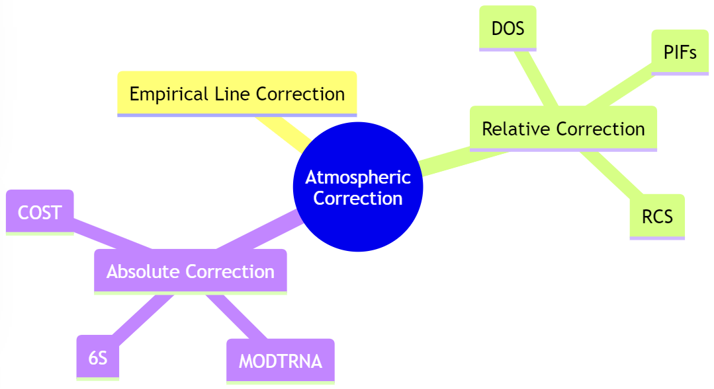

Correction
Geometric Correction
Geometric correction in remote sensing is the digital process of matching the image projection to a specific projection surface. When remote sensing data is collected, the image will be distorted due to view angle, topography, wind, etc. To deal with the distortion, ground control points (GCP) plays a huge role. Ground control points are large marked targets on the ground, it can help remote sensing instruments to determine the exact geographical location of the image and then determin the geometric transformation coefficients. The linear algorithm is then used t o calculate the positions in the rectified (gold standard) map. Finally, using RMSE to test the error and choose the best model.
flowchart LR
A(Identifying Ground <br/> Control Points) --> B(Getting geometric <br/>transformation <br/> coefficients)
B --> C{Linear<br/> algorithm}
C -->|Forward| D[Using RMSE to <br/> test the error]
C -->|Backward| D[Using RMSE to <br/> test the error]
Created by: Wendi Li
Orthorectification correction / Topographic correction
When image distortion occurs by sensor orientation, topographical variation and the curvature of the earth, the Orthorectification process should be used to correct, which is always called topographic correction. To orthorectify an image, an elevation model and a rational polynomial coefficients (RPCs) are minimally required, which provide the information of the topography of the ground and the relationship between image and the ground. The accurate elevation model calculates the effect of terrain variation on the image pixels and determine the position, which corrects the distortion.
Source:Intermap
Atmospheric Correction
In remote sensing detection, electromagnetic waves travel through atmosphere twice creating an adjacency effect, which is the reason for atmospheric correction. Atmospheric correction is mainly divided into relative correction and absolute correction, and they assume that a linear trend is existed for radiance between atmosphere and ground and the atmospheric measurements are available respectively. Dark Object Subtraction (DOS) is the most used methods to correct atmosphere and it is the most simplest one, and absolute correction methods are relatively difficult due to the unavailability of information they need. Empirical line correction is a special method which needs a reference spectrum from field or laboratory and use a linear regression to equate DN and reflectance.In my point of view, it is close to the relative correction method but cannot be fully attributed to it, because it is not exactly corrected by normalization.

Created by: Wendi Li